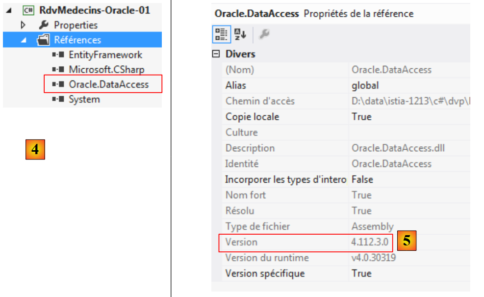
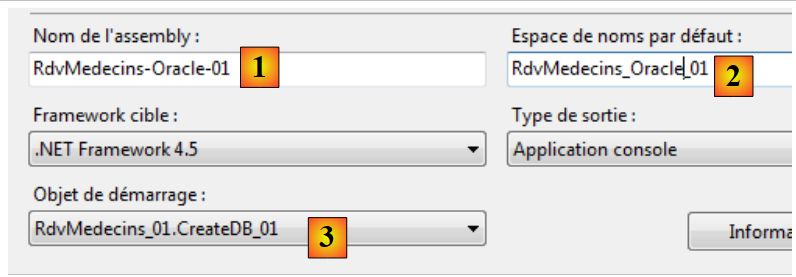
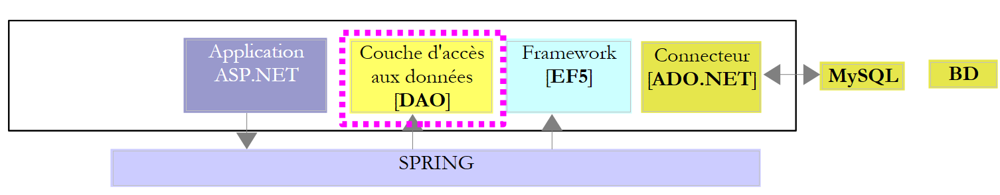
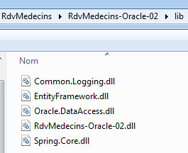

5. Oracle Database Express Edition 11g Release 2 案例研究
5.1. 工具安装
需要安装的工具如下：
- SGBD：[http://www.oracle.com/technetwork/products/express-edition/downloads/index.html]；
- 一个管理工具：EMS SQL Manager for Oracle Freeware [http://www.sqlmanager.net/fr/products/oracle/manager/download]；
- 一个 Oracle 客户端：NET：ODAC 11.2 Release 5 (11.2.0.3.20) 带 Oracle Developer Tools for Visual Studio：[http://www.oracle.com/technetwork/developer-tools/visual-studio/downloads/index.html]。
在以下示例中，用户 system 的密码为 system。
先启动 Oracle [1]，然后启动 [SQL Manager Lite for Oracle] 工具，我们将使用该工具管理 SGBD 和 [2]。
 |
- 在 [3] 中，我们连接到一个现有数据库；
 |
- 在 [4] 中，我们使用 Oracle 服务 XE 进行连接；
- 在 [5] 中，指定数据库名称为 XE；
- 在 [6] 中，以 system / system 身份登录；
- 在 [7] 中，结束向导；
 |
- 在 [8] 中，连接到数据库；
- 在 [9] 中，已成功登录；
- 由于是以拥有扩展权限的system / system用户身份登录的，因此我们可以管理用户，例如[10]；
 |
- 在 [11] 中，创建一个新用户；
- 将其更名为 [RDVMEDECINS-EF]；
- 在 [13] 中，其密码为 rdvmedecins；
- 在 [14] 中，确认用户创建；
- 在 [15] 步骤中，用户已创建；
 |
- 在 [16] 中，用户 [RDVMEDECINS-EF] 同时也是一个数据库模式；
- 在 [17] 中，新创建的用户权限不足。我们通过脚本 SQL 为其授予权限；
 |
- 在 [18] 中，脚本已执行；
- 在 [19] 中，我们将尝试以 [RDVMEDECINS-EF] 的身份登录，以查看其权限范围。为此，我们首先在 [EMS Manager] 中注册一个新数据库；
 |
- 在 [19] 中，通过 XE 服务登录；
- 在 [20] 中，使用 RDVMEDECINS-EF / rdvmedecins 身份登录；
- 在 [21] 中，需提供一个反映登录用户名的别名；
- 在 [22] 中，使用给定的信息登录 Oracle；
 |
 |
- 在 [22] 中，已成功连接；
- 在 [23] 中，尝试在 [RDVMEDECINS-EF] 模式下创建一个表；
- 在 [24] 中，定义了一个任意表；
- 在 [25] 中，验证其定义；
 |
- 在 [26] 中，该表已创建。将其删除；
- 在 [27] 中，该表已被删除。
现在我们已拥有一个具备足够权限的用户，接下来将创建项目 VS 2012，该项目将根据实体定义创建模式 [RDVMEDECINS-EF] 中的表。
5.2. 基于实体创建数据库
首先，我们将项目 [RdvMedecins-SqlServer-01] 的文件夹复制到 [RdvMedecins-Oracle-01] [1] 中：
 |
- 在 [2] 中，在 VS 2012 中，我们将项目 [RdvMedecins-SqlServer-01] 从解决方案中删除；
 |
- 在 [3] 中，该项目已被删除；
- 在 [4] 中，我们添加了另一个项目。该项目位于我们之前创建的 [RdvMedecins-Oracle-01] 文件夹中；
 |
- 在 [5] 中，加载的项目名为 [RdvMedecins-SqlServer-01]；
- 在 [6] 中，将其重命名为 [RdvMedecins-Oracle-01]
 |
- 在 [7] 中，向解决方案中添加了另一个项目。该项目位于我们之前从解决方案中删除的 [RdvMedecins-SqlServer-01] 项目文件夹中；
- 在 [8] 中，项目 [RdvMedecins-SqlServer-01] 已重新加入到解决方案中。
项目 [RdvMedecins-Oracle-01] 与项目 [RdvMedecins-SqlServer-01] 完全相同。我们需要进行一些修改。 在 [App.config] 中，我们将修改连接字符串，并需将 [DbProviderFactory] 适配至每个 SGBD。
<!-- 数据库连接字符串 -->
<connectionStrings>
<add name="monContexte" connectionString="Data Source=(DESCRIPTION=(ADDRESS_LIST=(ADDRESS=(PROTOCOL=TCP)(HOST=localhost)(PORT=1521)))(CONNECT_DATA=(SERVER=DEDICATED)(SERVICE_NAME=XE)));User Id=RDVMEDECINS-EF;Password=rdvmedecins;" providerName="Oracle.DataAccess.Client" />
</connectionStrings>
<!-- 工厂提供者 -->
<system.data>
<DbProviderFactories>
<remove invariant="Oracle.DataAccess.Client" />
<add name="Oracle Data Provider for .NET" invariant="Oracle.DataAccess.Client" description="Oracle Data Provider for .NET" type="Oracle.DataAccess.Client.OracleClientFactory, Oracle.DataAccess, Version=4.112.3.0, Culture=neutral, PublicKeyToken=89b483f429c47342" />
</DbProviderFactories>
</system.data>
- 第3行：用户名及其密码；
- 第6-11行：DbProviderFactory。第9行引用了DLL和[Oracle.DataAccess]，但我们没有这两个文件。 可通过 NuGet [1] 获取：
 |
- 在 [2] 中，于搜索框内输入关键词 oracle；
- 在 [3] 中，选择合适的 [Oracle Data Provider] 包。这是 Oracle 的 ADO.NET 连接器；
 |
- 在 [4] 中，添加了该引用；
- 在 [5] 中，对于 [App.config]，需填入 DLL 的正确版本号。该版本号可在其属性中找到。
在文件 [Entites.cs] 中，需调整即将生成的表的架构。所使用的架构即为表所有者的用户名。
[Table("MEDECINS", Schema = "RDVMEDECINS-EF")]
public class Medecin : Personne
{...}
[Table("CLIENTS", Schema = "RDVMEDECINS-EF")]
public class Client : Personne
{...}
[Table("RVS", Schema = "RDVMEDECINS-EF")]
public class Rv
{...}
[Table("CRENEAUX", Schema = "RDVMEDECINS-EF")]
public class Creneau
{...}
我们配置项目的运行：
 |
- 在 [1] 中，为即将生成的程序集指定了另一个名称；
- 在 [2] 中，同时指定另一个默认命名空间；
- 在 [3] 中，指定要执行的程序。
至此，编译未出现错误。运行程序 [CreateDB_01]。结果出现以下异常：
我们记得在 MySQL 中也遇到过相同的错误。这与实体中字段 Timestamp 的类型有关。我们进行相同的修改。在实体中，我们将以下三行
[Column("TIMESTAMP")]
[Timestamp]
public byte[] Timestamp { get; set; }
替换为以下内容：
[ConcurrencyCheck]
[Column("VERSIONING")]
public int? Versioning { get; set; }
因此，我们将该列的类型从 byte[] 更改为 int?。 需要回顾的是，无论是对于 SQL Server 还是 MySQL，表中用于管理访问并发性的列，每次插入或修改行时都会接收来自 SGBD 的值。 从现在开始，我们将使用一个整型实体字段。在 SGBD 中，我们将使用存储过程，在每次插入或修改行时将该整数递增 1。
我们对这四个实体进行上述修改后，重新运行应用程序。随后出现以下错误：
第 1 行指出，Oracle 的连接器 ADO.NET 无法删除现有的数据库。让我们回顾一下发生了什么。[CreateDB_01.cs] 的代码如下：
using System;
using System.Data.Entity;
using RdvMedecins.Models;
namespace RdvMedecins_01
{
class CreateDB_01
{
static void Main(string[] args)
{
// 创建数据库
Database.SetInitializer(new RdvMedecinsInitializer());
using (var context = new RdvMedecinsContext())
{
context.Database.Initialize(false);
}
}
}
}
第15行触发了类[RdvMedecinsInitializer]的执行（第12行）。该类内容如下：
public class RdvMedecinsInitializer : DropCreateDatabaseAlways<RdvMedecinsContext>
它继承自类 [DropCreateDatabaseAlways]，该类试图先删除再重建数据库。我们将该类的定义修改为：
public class RdvMedecinsInitializer : CreateDatabaseIfNotExists<RdvMedecinsContext>
只有当数据库不存在时才会进行创建。重新执行 [CreateDB_01.cs] 后，此时已无错误。但在 [EMS Manager] 中，我们发现数据库 [RDVMEDECINS-EF] 仍然为空。 由于EF 5检测到数据库已存在，因此未执行任何操作。该程序仅在数据库不存在时才会执行操作。由此，我们陷入了循环。事实上，SGBD的连接字符串如下：
<connectionStrings>
<add name="monContexte" connectionString="Data Source=(DESCRIPTION=(ADDRESS_LIST=(ADDRESS=(PROTOCOL=TCP)(HOST=localhost)(PORT=1521)))(CONNECT_DATA=(SERVER=DEDICATED)(SERVICE_NAME=XE)));User Id=RDVMEDECINS-EF;Password=rdvmedecins;" providerName="Oracle.DataAccess.Client" />
</connectionStrings>
第 2 行，连接字符串使用的不是数据库名称，而是用户名。该用户必须存在。
因此，我们需要使用工具 [EMS Manager for Oracle] 手动创建数据库 [RDVMEDECINS-EF]。本文不详述所有步骤，仅介绍最重要的部分。
Oracle 数据库结构如下：
表
 |
各表的主键和外键与前两个示例中的对应表一致。外键特别包含属性 ON、DELETE 和 CASCADE。
序列
此处创建了 Oracle 序列。它们是连续数字的生成器。共有 5 个：[1]。
 |
- 在 [2] 中，我们可以看到序列 [SEQUENCE_CLIENTS] 的属性。它生成从 1 开始、以 1 为增量、直至非常大值的连续数字。
所有序列都是基于相同的模式构建的。
- [SEQUENCE_CLIENTS] 将用于生成表 [CLIENTS] 的主键；
- [SEQUENCE_MEDECINS] 将用于生成表 [MEDECINS] 的主键；
- [SEQUENCE_CRENEAUX] 将用于生成表 [CRENEAUX] 的主键；
- [SEQUENCE_RVS] 将用于生成表 [RVS] 的主键；
- [SEQUENCE_VERSIONS] 将用于生成所有表中 [VERSIONING] 列的值。
触发器
触发器是由 SGBD 在表中发生某项事件（插入、修改、删除）之前或之后执行的存储过程。我们共有 8 个 [1]：
 |
让我们查看触发器 [TRIGGER_PK_CLIENTS] 的代码，该触发器为表 [CLIENTS] 提供主键：
- 第 1-5 行：在表 [CLIENTS] 上执行每次操作 INSERT 之前；
- 第 6 行：[ID] 列将采用 [SEQUENCE_CLIENTS] 序列的下一个值。因此，主键将获得由该序列提供的连续值。
触发器 [TRIGGER_PK_MEDECINS, TRIGGER_PK_CRENEAUX, TRIGGER_PK_RVS] 的原理与此类似。
让我们看看触发器 [TRIGGER_VERSIONS_CLIENTS] 的代码 DDL，该触发器为表 [CLIENTS] 的列 [VERSIONING] 提供数据：
- 第 1-2 行：在表 [CLIENTS] 上执行每次 INSERT 或 UPDATE 操作之前；
- 第 8 行：[VERSIONING] 列将取 [SEQUENCE_VERSIONS] 序列的下一个值。因此，[VERSIONING] 列将获得该序列提供的连续值。
触发器 [TRIGGER_VERSION_MEDECINS, TRIGGER_VERSION_CRENEAUX, TRIGGER_VERSION_RVS] 的工作原理与此类似。四个列 [VERSIONING] 的值均来自同一序列。
用于生成 Oracle 数据库表的脚本 [RDVMEDECINS-EF] 已放置在文件夹 [RdvMedecins / databases / oracle] 中。读者可加载并执行该脚本以创建表。
完成上述操作后，即可运行项目中的各个程序。它们产生的结果与使用 SQL Server 时相同，唯独程序 [ModifyDetachedEntities] 会因与 MySQL 相同的原因而崩溃。 解决方法相同。只需将项目 [RdvMedecins-MySQL-01] 中的程序 [ModifyDetachedEntities] 复制到项目 [RdvMedecins-Oracle-01] 中即可。随后会出现一个新问题：
- 第1-4行：脱机客户端已成功更新；
- 第 6 行：已知异常。这是在试图修改实体但未持有正确版本时出现的异常。然而在此处，我们并非要修改而是要删除该实体：
// 删除上下文外的实体
using (var context = new RdvMedecinsContext())
{
// 此处有一个新的空上下文
// 将 client1 置于已删除状态的上下文中
context.Entry(client1).State = EntityState.Deleted;
// 保存上下文
context.SaveChanges();
}
EF 5 拒绝在数据库中删除 client1，因为 client1（第 6 行）的版本不一致。 此前在处理 MySQL 时并未遇到此问题。我们逐渐发现，不同 SGBD 对应的 ADO.NET 连接器存在细微差异。修正如下：
using (var context = new RdvMedecinsContext())
{
// 此处有一个新的空上下文
// 将 client1 放入上下文中以将其删除
context.Clients.Remove(context.Clients.Find(client1.Id));
// 保存上下文
context.SaveChanges();
}
这样就成功了。
5.3. 基于 EF 的多层架构 5
 |
我们将首先构建数据访问层 [DAO]。 为此，我们将控制台项目 VS 2012 [RdvMedecins-SqlServer-02] 复制到 [RdvMedecins-Oracle-02] [1] 中：
 |
- 在 [2] 中，删除项目 [RdvMedecins-SqlServer-02]；
 |
- 在 [3] 中，将现有项目添加到解决方案中。该项目取自刚刚创建的 [RdvMedecins-Oracle-02] 文件夹；
- 在 [4] 中，新项目名称与被删除的项目相同。我们将更改其名称；
 |
- 在 [5] 中，我们已更改了项目名称；
- 在 [6] 中，修改了其部分属性，例如此处的程序集名称；
- 在 [7] 中，删除文件夹 [Models]，并用项目 [RdvMedecins-Oracle-01] 中的文件夹 [Models] 替换。因为这两个项目共享相同的模板。
 |
- 在 [8] 中，项目当前的引用；
- 在 [9] 中，已使用工具 NuGet 添加了 Oracle 连接器 ADO.NET。
在文件 [App.config] 中，将 SQL 服务器数据库中的信息替换为 Oracle 数据库中的信息。这些信息可在项目 [RdvMedecins-Oracle-01] 的文件 [App.config] 中找到：
<!-- 数据库连接字符串 -->
<connectionStrings>
<add name="monContexte" connectionString="Data Source=(DESCRIPTION=(ADDRESS_LIST=(ADDRESS=(PROTOCOL=TCP)(HOST=localhost)(PORT=1521)))(CONNECT_DATA=(SERVER=DEDICATED)(SERVICE_NAME=XE)));User Id=RDVMEDECINS-EF;Password=rdvmedecins;" providerName="Oracle.DataAccess.Client" />
</connectionStrings>
<!-- 工厂提供者 -->
<system.data>
<DbProviderFactories>
<remove invariant="Oracle.DataAccess.Client" />
<add name="Oracle Data Provider for .NET" invariant="Oracle.DataAccess.Client" description="Oracle Data Provider for .NET" type="Oracle.DataAccess.Client.OracleClientFactory, Oracle.DataAccess, Version=4.112.3.0, Culture=neutral, PublicKeyToken=89b483f429c47342" />
</DbProviderFactories>
</system.data>
Spring管理的对象也会发生变化。目前我们有：
<!-- Spring配置 -->
<spring>
<context>
<resource uri="config://spring/objects" />
</context>
<objects xmlns="http://www.springframework.net">
<object id="rdvmedecinsDao" type="RdvMedecins.Dao.Dao,RdvMedecins-SqlServer-02" />
</objects>
</spring>
第 7 行引用了项目 [RdvMedecins-SqlServer-02] 的程序集。该程序集现已更改为 [RdvMedecins-Oracle-02]。
完成上述操作后，我们已准备好执行 [DAO] 层的测试。在此之前，需先确保填充数据库（即 [RdvMedecins-Oracle-01] 项目中的 [Fill] 程序）。测试程序运行成功。
我们按照之前处理项目[RdvMedecins-SqlServer-02]的方法创建该项目中的DLL，并将项目中所有 DLL 程序，将其归入在 [RdvMedecins-Oracle-02] 中创建的 [lib] 文件夹中。这些将作为后续 Web 项目 [RdvMedecins-Oracle-03] 的参考。
 |
现在，我们已准备好构建应用程序的 [ASP.NET] 层：
 |
我们将以项目 [RdvMedecins-SqlServer-03] 为基础。我们将该项目的文件夹复制到 [RdvMedecins-Oracle-03] 和 [1] 中：
 |
- 在 [2] 中，使用 VS 2012 Express for the Web，我们打开 [RdvMedecins-Oracle-03] 文件夹中的解决方案；
- 在 [3] 中，我们将解决方案名称和项目名称进行修改；
 |
- 在 [4] 中，当前的项目引用；
- 在 [5] 中，将其删除；
- 并将其替换为对 DLL 的引用，该文件我们刚刚存储在项目 [RdvMedecins-Oracle-02] 的文件夹 [lib] 中。
接下来只需修改文件 [Web.config]，将其当前内容替换为项目 [RdvMedecins-Oracle-02] 中文件 [App.config] 的内容。完成上述操作后，运行 Web 项目。项目运行正常。 请务必在运行Web应用程序前先填充数据库。